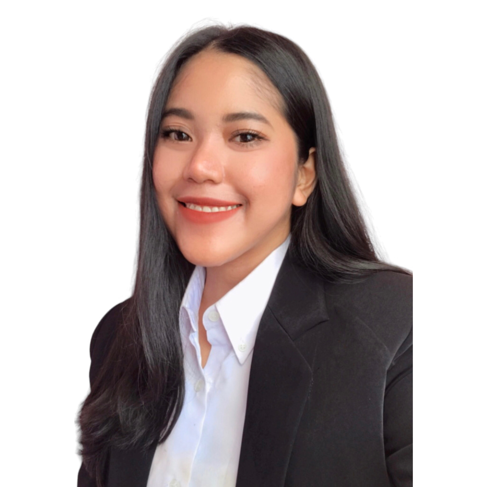

My professional experience spans logistics, freight forwarding, air cargo, commercial development, and customer relationship management.
My long-term academic objective is to investigate strategic management and organizational phenomena within international logistics networks, with particular interest in network governance, inter-organizational relationships, and global competitive dynamics.